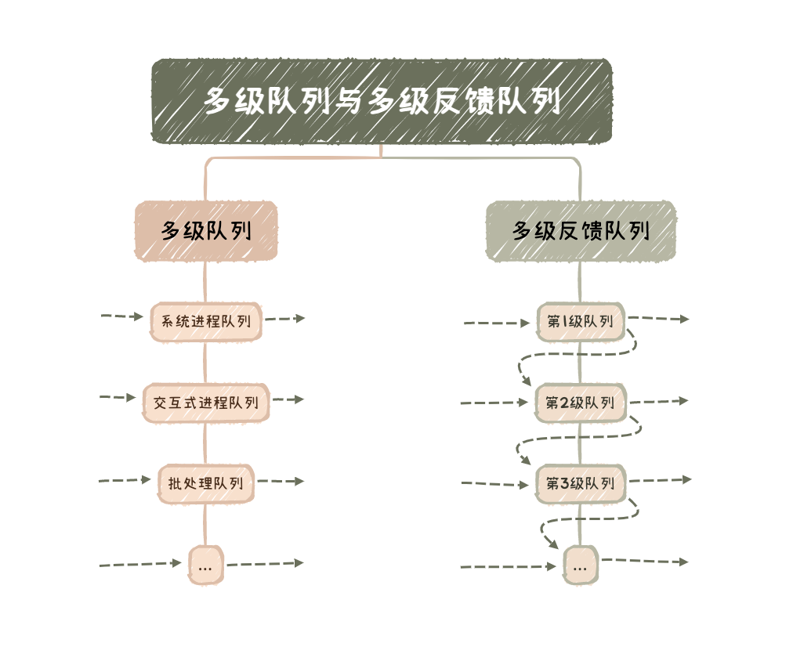

处理机调度
2022.10.14
本文是《处理机调度》专题的精简总结版，包含概念关键词、图表汇总、易错点汇总。
➡️ 详细版入口
调度的层次

- 高级调度/作业调度：外存与内存之间的调度，每个作业只调入一次、调出一次。
- 中级调度/内存调度：挂起进程与挂起态转就绪态。挂起时调入外存，转就绪再掉入内存。
- 低级调度/进程调度：就绪队列中选取一个进程，将处理机分配给它，最基本。
调度的指标
- CPU利用率：
- 系统吞吐量：单位时间内CPU完成作业的数量
- 周转时间：从作业提交到作业完成的时间
- 周转时间：
- 平均周转时间：周转时间的平均
- 带权周转时间：
- 平均带权周转时间：带权周转时间的平均
- 等待时间：进程等处理机的时间之和
- 响应时间：用户提交进程到首次产生相应的时间
- CPU利用率：
调度的实现
- 排队器(构造就绪队列)、分排器(从就绪队列中取出分配给CPU)、上下文切换器(新老进程PCB对处理机寄存器的信息转换)
- 用户态和内核态之间的切换称为模式切换，而不是上下文切换
- 上下文切换只能发生在内核态
- 调度程序(一种内核程序)
- 非抢占调度方式(非剥夺方式)，抢占调度方式(剥夺方式，常见于优先权、短进程优先和时间片原则)
- 闲逛进程：系统中没有就绪进程，就会调度闲逛进程(idle）运行
- 用户级线程调度。由于内核并不知道线程的存在，所以内核还是和以前一样，选择一个线程，并给予时间控制。由进程中的调度程序决定哪个线程运行。
- 内核级线程调度。内核选择一个特定线程运行，通常不用考虑该线程属于哪个进程。对被选择的线程赋予一个时间片，如果超过了时间片，就会强制挂起该线程。
- 在进程处于临界区时不能进行处理机调度【错】。当进程处于临界区时，说明进程正在占用处理机，只要不破坏临界资源的使用规则，就不会影响处理机的调度，只会影响性能。
经典的调度算法

优先级调度
- 系统进程 ＞ 用户进程
- 交互型进程 ＞ 非交互型进程（或前台进程 ＞后台进程）
- I/O型进程 ＞ 计算型进程
高响应比优先调度
多级队列调度与多级反馈队列调度
